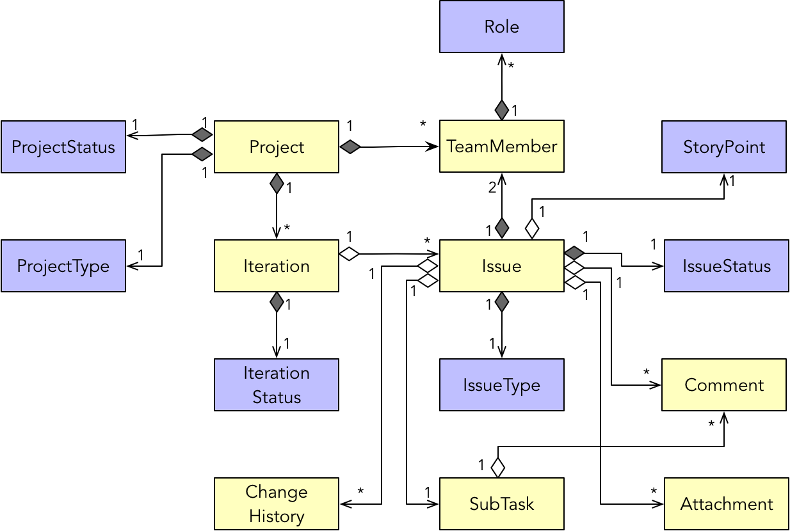
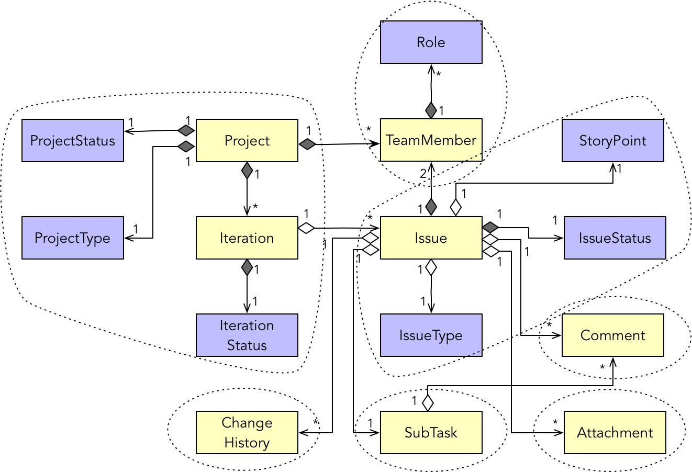
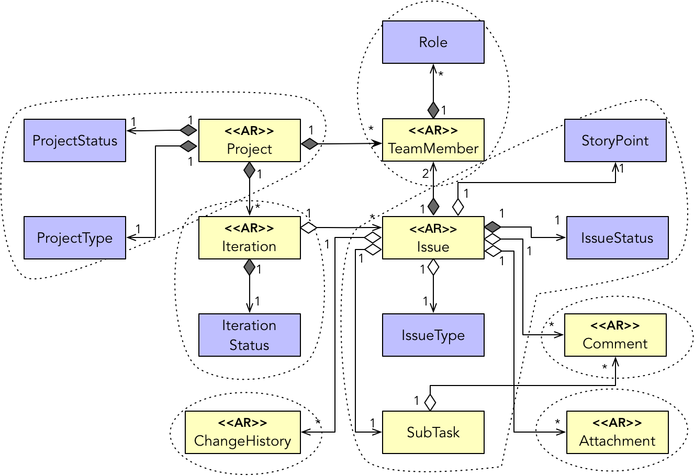
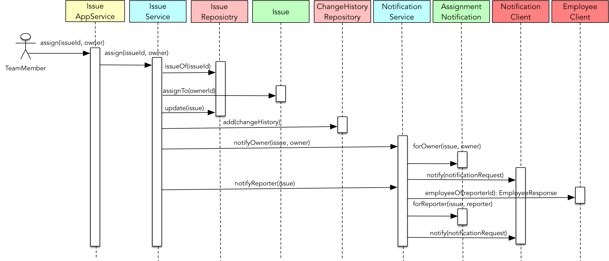

- 001 「战略篇」访谈 DDD 和微服务是什么关系？.md
- 002 「战略篇」开篇词：领域驱动设计，重焕青春的设计经典.md
- 003 领域驱动设计概览.md
- 004 深入分析软件的复杂度.md
- 005 控制软件复杂度的原则.md
- 006 领域驱动设计对软件复杂度的应对（上）.md
- 007 领域驱动设计对软件复杂度的应对（下）.md
- 008 软件开发团队的沟通与协作.md
- 009 运用领域场景分析提炼领域知识（上）.md
- 010 运用领域场景分析提炼领域知识（下）.md
- 011 建立统一语言.md
- 012 理解限界上下文.md
- 013 限界上下文的控制力（上）.md
- 014 限界上下文的控制力（下）.md
- 015 识别限界上下文（上）.md
- 016 识别限界上下文（下）.md
- 017 理解上下文映射.md
- 018 上下文映射的团队协作模式.md
- 019 上下文映射的通信集成模式.md
- 020 辨别限界上下文的协作关系（上）.md
- 021 辨别限界上下文的协作关系（下）.md
- 022 认识分层架构.md
- 023 分层架构的演化.md
- 024 领域驱动架构的演进.md
- 025 案例 层次的职责与协作关系（图文篇）.md
- 026 限界上下文与架构.md
- 027 限界上下文对架构的影响.md
- 028 领域驱动设计的代码模型.md
- 029 代码模型的架构决策.md
- 030 实践 先启阶段的需求分析.md
- 031 实践 先启阶段的领域场景分析（上）.md
- 032 实践 先启阶段的领域场景分析（下）.md
- 033 实践 识别限界上下文.md
- 034 实践 确定限界上下文的协作关系.md
- 035 实践 EAS 的整体架构.md
- 036 「战术篇」访谈：DDD 能帮开发团队提高设计水平吗？.md
- 037 「战术篇」开篇词：领域驱动设计的不确定性.md
- 038 什么是模型.md
- 039 数据分析模型.md
- 040 数据设计模型.md
- 041 数据模型与对象模型.md
- 042 数据实现模型.md
- 043 案例 培训管理系统.md
- 044 服务资源模型.md
- 045 服务行为模型.md
- 046 服务设计模型.md
- 047 领域模型驱动设计.md
- 048 领域实现模型.md
- 049 理解领域模型.md
- 050 领域模型与结构范式.md
- 051 领域模型与对象范式（上）.md
- 052 领域模型与对象范式（中）.md
- 053 领域模型与对象范式（下）.md
- 054 领域模型与函数范式.md
- 055 领域驱动分层架构与对象模型.md
- 056 统一语言与领域分析模型.md
- 057 精炼领域分析模型.md
- 058 彩色 UML 与彩色建模.md
- 059 四色建模法.md
- 060 案例 订单核心流程的四色建模.md
- 061 事件风暴与业务全景探索.md
- 062 事件风暴与领域分析建模.md
- 063 案例 订单核心流程的事件风暴.md
- 064 表达领域设计模型.md
- 065 实体.md
- 066 值对象.md
- 067 对象图与聚合.md
- 068 聚合设计原则.md
- 069 聚合之间的关系.md
- 070 聚合的设计过程.md
- 071 案例 培训领域模型的聚合设计.md
- 072 领域模型对象的生命周期-工厂.md
- 073 领域模型对象的生命周期-资源库.md
- 074 领域服务.md
- 075 案例 领域设计模型的价值.md
- 076 应用服务.md
- 077 场景的设计驱动力.md
- 078 案例 薪资管理系统的场景驱动设计.md
- 079 场景驱动设计与 DCI 模式.md
- 080 领域事件.md
- 081 发布者—订阅者模式.md
- 082 事件溯源模式.md
- 083 测试优先的领域实现建模.md
- 084 深入理解简单设计.md
- 085 案例 薪资管理系统的测试驱动开发（上）.md
- 086 案例 薪资管理系统的测试驱动开发（下）.md
- 087 对象关系映射（上）.md
- 088 对象关系映射（下）.md
- 089 领域模型与数据模型.md
- 090 领域驱动设计对持久化的影响.md
- 091 领域驱动设计体系.md
- 092 子领域与限界上下文.md
- 093 限界上下文的边界与协作.md
- 094 限界上下文之间的分布式通信.md
- 095 命令查询职责分离.md
- 096 分布式柔性事务.md
- 097 设计概念的统一语言.md
- 098 模型对象.md
- 099 领域驱动设计参考过程模型.md
- 100 领域驱动设计的精髓.md
- 101 实践 员工上下文的领域建模.md
- 102 实践 考勤上下文的领域建模.md
- 103 实践 项目上下文的领域建模.md
- 104 实践 培训上下文的业务需求.md
- 105 实践 培训上下文的领域分析建模.md
- 106 实践 培训上下文的领域设计建模.md
- 107 实践 培训上下文的领域实现建模.md
- 108 实践 EAS 系统的代码模型.md
- 109 后记：如何学习领域驱动设计.md
103 实践 项目上下文的领域建模
项目上下文的领域建模
业务需求
项目上下文的业务需求主要包括：项目管理、项目成员管理、迭代与问题管理等功能。
管理员可以创建项目，指定项目类型并配置项目的基本信息。项目管理人员可以为项目添加项目成员，并指定项目成员的角色。当一名员工成为该项目的成员后，参与该项目的经验就可以作为简历的一部分。项目管理人员可以创建一个或多个迭代，并为每个迭代确定一个迭代目标。如果没有创建迭代，系统会为项目创建一个默认的待办项（Backlog）迭代。创建迭代时，需要指定迭代的周期即开始时间和截止时间。迭代需要手动选择开始才会生效。迭代开始时，需要根据当前日期显示剩余天数；如果当前时间到达截止日期，迭代也不会自动关闭，只会提示“剩余 0 天”，项目管理人员可以手动地关闭迭代，并将当前迭代未完成的问题移到下一个已经开始或还未开始的迭代。如果没有符合条件的迭代，这些问题会移到待办项迭代中。
一个问题（Issue）可以是软件的缺陷，一个项目的具体任务，一个业务功能需求或者是一个需要解决的技术难题等。创建问题时，需要指定问题所属的项目、问题类型、问题概要和报告人，设置问题的优先级以及问题的经办人。如果未指定经办人，系统会自动将创建问题的用户设置为经办人。当然，还需要输入问题的描述，并设置该问题的标签。关注该问题的用户可以为问题添加评论，或者上传附件。在创建问题时，还可以指定问题所属的迭代，指定的迭代只能是当前正在进行或未来要进行的迭代。
每个问题有一个状态，用来表明问题所处的阶段。这些状态包括：
- Open：表示问题被提交，等待团队成员处理。
- In Progress：问题在处理中，尚未完成。
- Resolved：问题已解决，但解决结论需要确认。
- Reopened：已解决的问题未获认可。
- Closed：已解决的问题得到认可和确认，置为关闭状态。
问题的默认状态为 Open。如果该问题已经分配给项目成员并开始解决该问题时，项目成员需要手动将问题状态修改为 In Progress。一旦解决了该问题，就应标记该问题为 Resolved。只有问题的报告人才可以修改问题的状态为 Reopened 或 Closed。任何状态的变更都会发送邮件通知经办人和报告人。由于每个问题可以创建多个子任务，当问题位于处理中状态时，若其下的子任务还未标记为 Resolved，在标记问题为 Resolved 时，需提示用户：部分子任务还未解决。若用户确认该问题已经解决，并将其标记为 Resolved 状态时，该问题下的所有子任务状态也必须标记为 Resolved。如果为问题创建了子任务，则关注该问题的用户也可以为子任务添加评论。
在创建或编辑问题时，团队成员可以对问题进行评估，给出问题的故事点（Story Point）。在对迭代和项目进行汇总统计时，可以根据问题或故事点进行汇总统计。
问题被创建后，团队成员可以编辑问题，例如修改标题、描述、估算、重新分配报告人和经办人等。每次对问题的修改都需要记录下来，作为当前问题的变更记录（ChangeHistory）。如果修改了报告人，需要向之前的报告人和目前负责的报告人发送邮件通知；如果修改了经办人，需要向报告人以及之前的经办人、目前负责的经办人发送邮件通知。当一个问题分配给团队成员时，团队成员可以在该问题下填写项目日志。
领域分析模型
分析项目上下文的需求，可以通过名词动词法初步获得项目上下文的主要领域概念，包括：
- 项目（Project）
- 项目成员（TeamMember）
- 迭代（Iteration）
- 问题（Issue）
- 子任务（SubTask）
- 评论（Comment）
- 附件（Attachment）
- 变更记录（ChangeHistory）
项目、迭代、问题与子任务存在非常清晰的一对多组合关系，它们也构成了项目上下文的“骨架”。项目成员作为参与项目管理活动的角色，是主要业务用例的参与者。每个问题可以有多个附件，问题与子任务还可以有多个评论。每次对问题的修改与变更，都会生成一条变更记录。于是，可以快速获得如下的领域分析模型：

领域分析模型除了包含主要的领域概念之外，还将一些主要的属性定义为领域类，同时确定了它们之间的关系。由于一个问题只能指定一个报告人和一个经手人，因此 Issue 与 TeamMember 之间的关系是一对二的关系。
领域设计模型
要获得项目上下文的领域设计模型，仍然可以采用庖丁解牛的过程进行模型的细化。
首先理顺对象图，明确各个类之间的关系。项目上下文各个类之间的关系非常清晰，很容易辨别类之间的面向对象合成或聚合关系。区分合成和聚合，只需判断主类是否必须拥有从类的属性值。例如，Issue 必须指定 IssueType 和 IssueStatus，因此是合成关系；但它未必需要划分 SubType，也未必一定拥有 Comment 与 Attachment，它们之间的关系就是聚合关系。由于需求要求一个项目必须定义至少一个迭代，如果没有手动创建迭代，系统会默认创建待办项迭代，因此 Project 与 Iteration 之间的关系是合成关系。
确定实体还是值对象也非常容易。由于业务需求的主要领域概念都需要身份标识来辨别其身份，故而定义为实体。至于这些实体的属性多数被定义为值对象，因为它们代表的领域概念只需要关心其值，无需身份标识，如 StoryPoint、IssueType 等类。由此可获得梳理后的领域对象图：

既然这些类之间的关系要么是合成关系，要么是聚合关系，通过分解关系薄弱处来划定聚合边界也变得非常容易。但是，需要注意两点特殊之处。其一，Project 和 Issue 与 TeamMember 之间都存在合成关系，且 TeamMember 是一个实体；由于实体不能被两个聚合同时调用，因此，只能将这三个实体定义为三个独立的聚合。其二，Issue 与 StoryPoint 之间的关系虽然是面向对象的聚合关系，按照依赖强弱，可以考虑将 StoryPoint 与 Issue 分开，但由于 StoryPoint 是值对象，不能独立定义为一个聚合，只能划到 Issue 实体的边界内：

确定了初步的聚合边界之后，我们需要遵循聚合设计的原则来调整已有边界。Project 与 Iteration 虽然是依赖较强的合成关系，一个项目也确实需要至少一个迭代存在，但由于 Iteration 允许调用者能够直接操作和管理迭代的生命周期，具有独立性，故而需要单独为迭代划定聚合边界。
Issue 与 SubTask 本身是面向对象的聚合关系，一个问题也可以没有子任务；然而，一旦问题划分了子任务，问题的状态就要受到子任务状态的约束。例如，在将问题的状态设置为 Resolved 时，必须检查该问题下所有子任务的状态是否已被设置为 Resolved，子任务的状态必须与问题的状态保持一致，这实际上是 Issue 与 SubTask 之间存在的不变量（Invariant）。
Issue 与 SubTask 之间的不变量带来了聚合设计的一个分歧。若依据不变量原则，这两个实体应放在同一个聚合中。但是，问题与子任务又都可以添加评论，由于 Comment 是一个单独的聚合，若要表示子任务与评论之间的关系，又该如何表达呢？毕竟，此时的 SubTask 只是 Issue 聚合内部的实体，它的 ID 不能暴露给当前聚合外的其他聚合。这就是聚合设计的为难之处。我们能选择的方案有以下三种：
- A 方案：为 Issue、SubTask 和 Comment 建立三个单独的聚合，即意味着牺牲不变量
- B 方案：将 Issue、SubTask 和 Comment 放在一个聚合中，即意味着聚合粒度变大
- C 方案：将 Issue 与 SubTask 放在一个聚合中，然后暴露各自的 Id 给 Comment 聚合，即意味着破坏了聚合边界
我们需要评估哪一个方案带来的优势更大，哪一个方案带来的问题更少。A 方案将 SubTask 放在 Issue 聚合之外，意味着调用者可以通过 SubTask 的资源库单独管理子任务的生命周期，在没有 Issue 边界的控制下，很难保证 Issue 与 SubTask 之间状态的一致。B 方案会形成一个粒度较大的聚合，且 Comment 的管理只能通过 Issue 聚合根实体进行，无法单独管理，存在不便。C 方案满足了 Issue 与 SubTask 的不变量，也满足了 Comment 的独立性，但在一定程度上破坏了聚合边界的封装性。
每个方案都有自己的问题，相比较而言，C 方案带来的优势更大。在无法改变业务需求的情况下，我更倾向于这一方案：

聚合根实体分别为：Project、Iteration、Issue、TeamMember、Comment、Attachment 与 ChangeHistory。图中仍然用面向对象的合成或聚合表现聚合根之间的关系，但在设计时，上游聚合根应通过 ID 与下游聚合根建立关联关系。比较特殊的是 Issue 聚合根，它需要提供 IssueId 与 SubTaskId 和下游聚合 Comment 建立关联。
通过用例可以确定业务场景，并利用场景驱动设计细化领域设计模型。例如“分配问题给项目成员”领域场景，可以分解任务为：
- 分配问题给项目成员
- 获得问题
- 分配问题给经办人
- 更新问题
- 创建问题的变更记录
- 通知报告人
- 生成报告人通知
- 发送通知
- 通知经办人
- 获取经办人信息
- 生成经办人通知
- 发送通知
根据角色构造型进行职责分配获得时序图如下所示：

这一领域场景看似简单，但它实际上牵涉到项目上下文多个领域对象，以及与 OA 集成上下文、员工上下文之间的协作。其中，EmployeeClient 与 NotificationClient 是针对员工上下文与 OA 集成上下文定义的南向网关（属于防腐层）。该场景的时序图脚本如下所示：
IssueAppService.assign(issueId, owner) {
IssueService.assign(issueId, owner) {
Issue issue = IssueRepository.issueOf(issueId);
issue.assignTo(ownerId);
IssueRepository.update(issue);
ChangeHistoryRepository.add(changeHistory);
NotificationService.notifyOwner(issue, owner) {
AssignmentNotification notification = AssignmentNotification.forOwner(issue, owner);
NotificationClient.notify(NotificationRequest.from(notification));
}
NotificationService.notifyReporter(issue) {
EmployeeResponse empResponse = EmployeeClient.employeeOf(reporterId);
AssignmentNotification notification = AssignmentNotification.forReporter(issue, empResponse.toReporter());
NotificationClient.notify(NotificationRequest.from(notification));
}
}
}
应用服务 IssueAppService 对外提供支持该领域场景的服务方法，在其内部，又将该职责委派给了 IssueService 领域服务，由它负责协调 IssueRepository 资源库与 Issue 聚合根实体。一旦问题分配完毕，IssueService 领域服务会调用 ChangeHistoryRepository 资源库创建一条新的变更记录，然后通过 NotificationService 领域服务发送通知。承担问题的项目成员就是问题的经办人（Owner），AssignmentNotification 领域对象可以通过 Issue 与提供了经办人信息的 TeamMember 生成通知内容，交由 NotificationClient 网关发送通知。由于 Issue 仅持有报告人的 employeeId（即图中的 reporterId)，因此还需要通过 EmployeeClient 网关获得报告人（reporter）的详细信息，再由 AssignmentNotification 领域对象生成通知内容，最后发送通知给该问题的报告人。
AssignmentNotification 是领域分析建模以及识别聚合的领域设计建模阶段未能识别出来的领域对象。它属于项目上下文，持有了与问题分配相关的领域知识。NotificationClient 网关接口定义的 NotificationRequest 实际上是 AssignmentNotification 对应的消息契约对象，它能够将 AssignmentNotification 转换为通知上下文需要的请求对象。AssignmentNotification 领域对象虽然封装了领域信息和领域逻辑，但它并不需要持久化，故而属于一个瞬时对象。
领域实现模型
采用场景驱动设计对领域进行设计建模后，根据领域场景继续领域实现建模可谓水到渠成。仍然从领域场景拆分的任务开始编写测试用例，然后采用测试驱动开发一步步驱动出领域逻辑的实现代码。仍以“分配问题给项目成员”领域场景为例，选择位于该场景内部的原子任务“分配问题给经办人”，确定如下测试用例：
- 问题被分配给指定经办人，并创建变更记录
- 状态为 Resolved 或 Closed 的问题不可再分配给经办人
- 问题不可分配给相同的经办人
对应的测试方法为：
public class IssueTest {
@Test
public void should_assign_to_specific_owner_and_generate_change_history() {
Issue issue = Issue.of(issueId, name, description);
ChangeHistory history = issue.assignTo(owner, operator);
assertThat(issue.ownerId()).isEqualTo(owner.id());
assertThat(history.issueId()).isEqualTo(issueId.id());
assertThat(history.operatedBy()).isEqualTo(operator);
assertThat(history.operation()).isEqualTo(Operation.Assignment);
assertThat(history.operatedAt()).isEqualToIgnoringSeconds(LocalDateTime.now());
}
@Test
public void should_throw_AssignmentIssueException_when_assign_resolved_issue() {
Issue issue = Issue.of(issueId, name, description);
issue.changeStatusTo(IssueStatus.Resolved);
assertThatThrownBy(() -> issue.assignTo(owner, operator))
.isInstanceOf(AssignmentIssueException.class)
.hasMessageContaining("resolved issue can not be assigned");
}
@Test
public void should_throw_AssignmentIssueException_when_assign_closed_issue() {
Issue issue = Issue.of(issueId, name, description);
issue.changeStatusTo(IssueStatus.Closed);
assertThatThrownBy(() -> issue.assignTo(owner, operator))
.isInstanceOf(AssignmentIssueException.class)
.hasMessageContaining("closed issue can not be assigned");
}
@Test
public void should_throw_AssignmentIssueException_when_issue_is_assigned_to_same_owner() {
Issue issue = Issue.of(issueId, name, description);
issue.assignTo(owner, operator);
assertThatThrownBy(() -> issue.assignTo(owner, operator))
.isInstanceOf(AssignmentIssueException.class)
.hasMessageContaining("issue can not be assign to same owner again");
}
}
聚合根实体 Issue 负责完成对问题的分配，方法 assignTo() 的实现为：
public class Issue {
public ChangeHistory assignTo(IssueOwner owner, Operator operator) {
if (status.isResolved()) {
throw new AssignmentIssueException("resolved issue can not be assigned.");
}
if (status.isClosed()) {
throw new AssignmentIssueException("closed issue can not be assigned.");
}
if (this.ownerId != null && this.ownerId.equals(owner.id())) {
throw new AssignmentIssueException("issue can not be assign to same owner again.");
}
this.ownerId = owner.id();
return ChangeHistory
.operate(Operation.Assignment)
.to(issueId.id())
.by(operator)
.at(LocalDateTime.now());
}
}
由于问题的每次变更都需要记录变更记录，且变更记录还需要保留操作者的信息，故而需要在 assignTo() 方法中添加操作人员的信息。Issue 与 ChangeHistory 分属两个聚合。由于 Issue 持有了创建变更记录的信息，因此由它作为 ChangeHisitory 聚合的工厂；同时，变更记录作为 assignTo() 方法的返回结果，也符合领域逻辑的要求。
领域服务 IssueService 负责协调 Issue 聚合与资源库，由其完成相对完整的问题分配功能。在为其编写测试用例时，勿需重复编写业已覆盖的测试用例。例如，需要考虑根据问题 ID 未找到问题的测试用例，但勿需再考虑分配的问题状态不合理的测试用例，因为后者在为 Issue 编写测试时已经覆盖了。换言之，在为 IssueService 编写测试时，应该认为 issue.assignTo(owner, operator) 方法的实现是正确的。IssueService 的测试方法为：
public class IssueServiceTest {
@Test
public void should_assign_issue_to_specific_owner_and_generate_change_history() {
Issue issue = Issue.of(issueId, "test issue", "test desc");
IssueRepository issueRepo = mock(IssueRepository.class);
when(issueRepo.issueOf(issueId)).thenReturn(Optional.of(issue));
issueService.setIssueRepository(issueRepo);
ChangeHistoryRepository changeHistoryRepo = mock(ChangeHistoryRepository.class);
issueService.setChangeHistoryRepository(changeHistoryRepo);
issueService.assign(issueId, owner, operator);
assertThat(issue.ownerId()).isEqualTo(owner.id());
verify(issueRepo).issueOf(issueId);
verify(issueRepo).update(issue);
verify(changeHistoryRepo).add(isA(ChangeHistory.class));
}
@Test
public void should_throw_IssueException_given_no_issue_found_given_issueId() {
IssueRepository issueRepo = mock(IssueRepository.class);
when(issueRepo.issueOf(issueId)).thenReturn(Optional.empty());
issueService.setIssueRepository(issueRepo);
ChangeHistoryRepository changeHistoryRepo = mock(ChangeHistoryRepository.class);
issueService.setChangeHistoryRepository(changeHistoryRepo);
assertThatThrownBy(() -> issueService.assign(issueId, owner, operator))
.isInstanceOf(IssueException.class)
.hasMessageContaining("issue")
.hasMessageContaining("not found");
verify(issueRepo).issueOf(issueId);
verify(issueRepo, never()).update(isA(Issue.class));
verify(changeHistoryRepo, never()).add(isA(ChangeHistory.class));
}
}
它的实现为：
public class IssueService {
private IssueRepository issueRepo;
private ChangeHistoryRepository changeHistoryRepo;
public void assign(IssueId issueId, IssueOwner owner, Operator operator) {
Optional<Issue> optIssue = issueRepo.issueOf(issueId);
Issue issue = optIssue.orElseThrow(() -> issueNotFoundError(issueId));
ChangeHistory changeHistory = issue.assignTo(owner, operator);
issueRepo.update(issue);
changeHistoryRepo.add(changeHistory);
}
private IssueException issueNotFoundError(IssueId issueId) {
return new IssueException(String.format("issue with id {%s} was not found", issueId.id()));
}
}
与 Issue 聚合根实体的测试不同，在为领域服务编写测试时，只要它依赖了访问外部资源的网关，就需要对其进行模拟（Mock），以保证单元测试的快速反馈。
到目前为止，我们仅仅针对员工上下文、考勤上下文与项目上下文的领域层编写测试与产品代码。即使通过领域服务驱动出了资源库，也仅仅是抽象的接口定义。在合适的时机，我们当然需要实现基础设施的内容，但这种通过领域逻辑驱动出领域实现模型的方式，毫无疑问才是走在领域驱动设计的正确道路上。